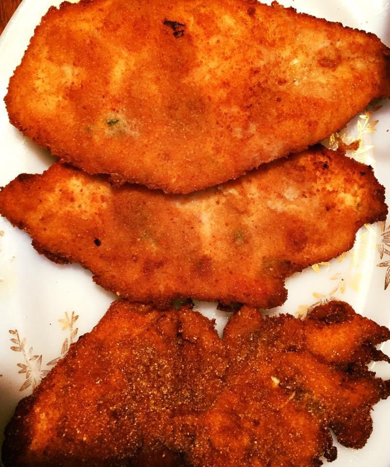

Home
Chicken Pane

Recipe Description
Ingredients
- Chicken breasts
- Onion
- Lemon
- Breadcrumbs
- Salt and pepper
- Oil
Steps to make chicken pane
- Slice chicken into thinner slices
- Put slices into bowl. Squeeze lemons into bowl
- Blend onion and pour contents into bowl
- Add salt and pepper. Add seasonings (optional)
- Leave in refrigerator covered for at least an hour
- Put slices in breadcrumbs. Put oil in frying pan
- Fry chicken until golden brown on each side